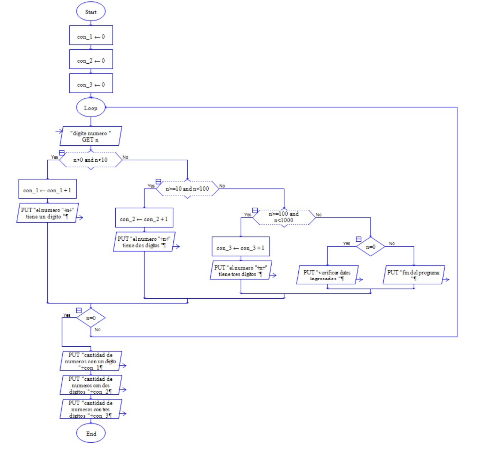
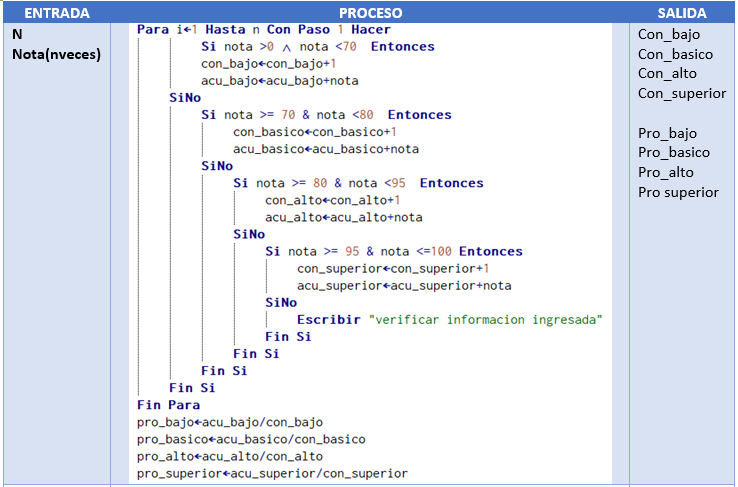

La estructura if se denomina estructura de selección única porque ejecuta un bloque de sentencias solo cuando se cumple la condición del if. Si la condición es verdadera se ejecuta el bloque de sentencias. Si la condición es falsa, el flujo del programa continúa en la sentencia inmediatamente posterior al if.
Estructura if simple
 |
 |
| Pseudocodigo | Java |
Estructura if doble
|  |  |
| Pseudocodigo | Java |
Estructura if anidado
|  |  |
| Pseudocodigo | Java |